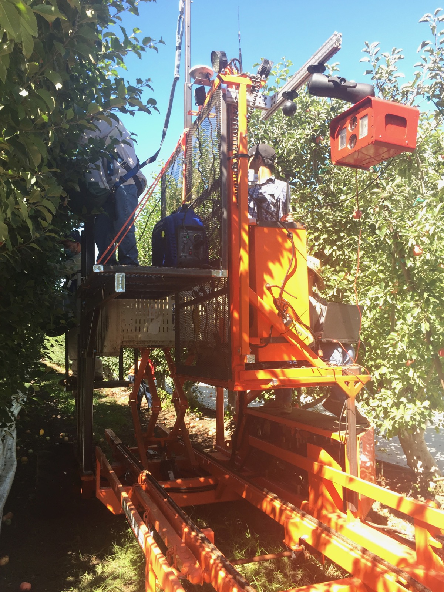

Robotic harvest-aiding orchard platforms
Harvest is among the most labor-intensive jobs in fresh-market fruit, and the seasonal workforce it depends on is getting harder to find. Growers have moved toward high-density orchards with narrow, nearly two-dimensional canopies — fruiting walls — that are easier to pick. Harvest-aid platforms remove the ladder. U.S. adoption is still limited, even in modern orchards, because the machines are costly and the labor savings are often smaller than expected. Throughput is limited by a mismatch: fruit is not uniform along the row, and pickers do not all work at the same speed.
The project builds affordable technology for the next generation of those platforms. The machine is a co-bot. It carries the crew and sets each person’s height against the canopy. Sensing estimates the fruit coming up and how fast each picker is working. From that, the platform changes its travel speed and lifts each picker into a fruit zone that fits their pace, so the whole crew harvests more. Safety and ergonomics are part of the same design.
The platform, the workers, and the fruiting wall are treated as a processing line. The control idea is the manufacturing rule of matching incoming flow to machine capacity: platform speed and picker placement are chosen so each person’s rate lines up with a suitable zone of the wall. Imaging estimates fruit density and harvest rate. Multi-arm robotic harvesters will face the same sensing and scheduling problems, so the platform work is also a step toward fully mechanized selective picking.
